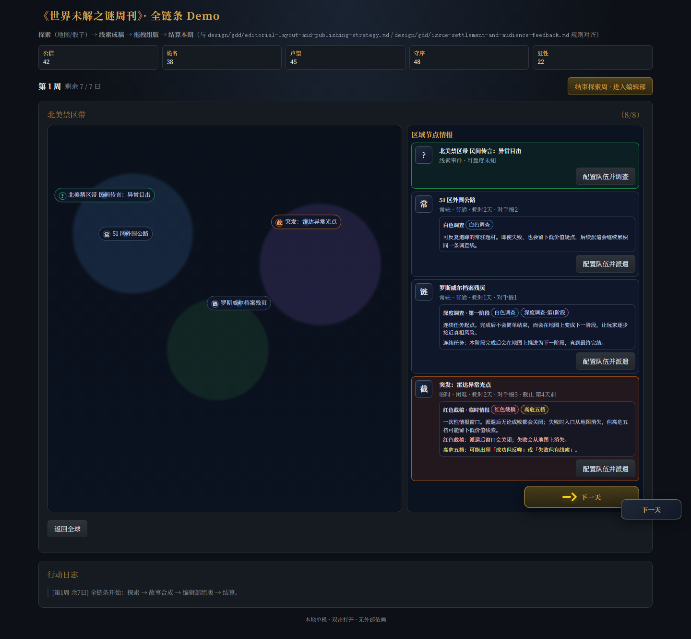
派遣任务类型落地截图说明
本页汇总 2026-04-28 的 HTML 原型真实截图，把“白色调查 / 红色截稿 / 深度调查连续任务 / 高危五档 / 再追一次 bonus”的改动按玩家流程串起来，避免逐张图片翻找。
展示入口北美禁区带首区试玩
任务类型区域卡 + 配置页双重说明
连续任务罗斯威尔链逐阶段生成
终局惊喜再追一次 + 更糟黑骰
一、首区总览：先让玩家看懂任务不同
区域地图和右侧任务卡会直接显示任务类型，不需要等到结算后才知道自己接了什么任务。
二、点击后的配置页：任务类型必须讲清楚
玩家点进任务后，概率面板上方先出现任务类型说明，避免只看到骰池和成功率。
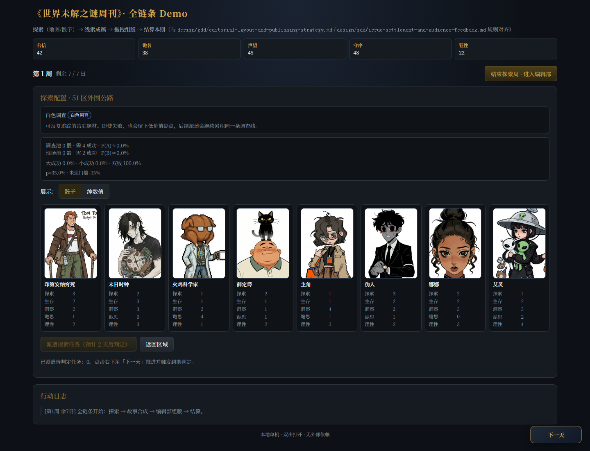
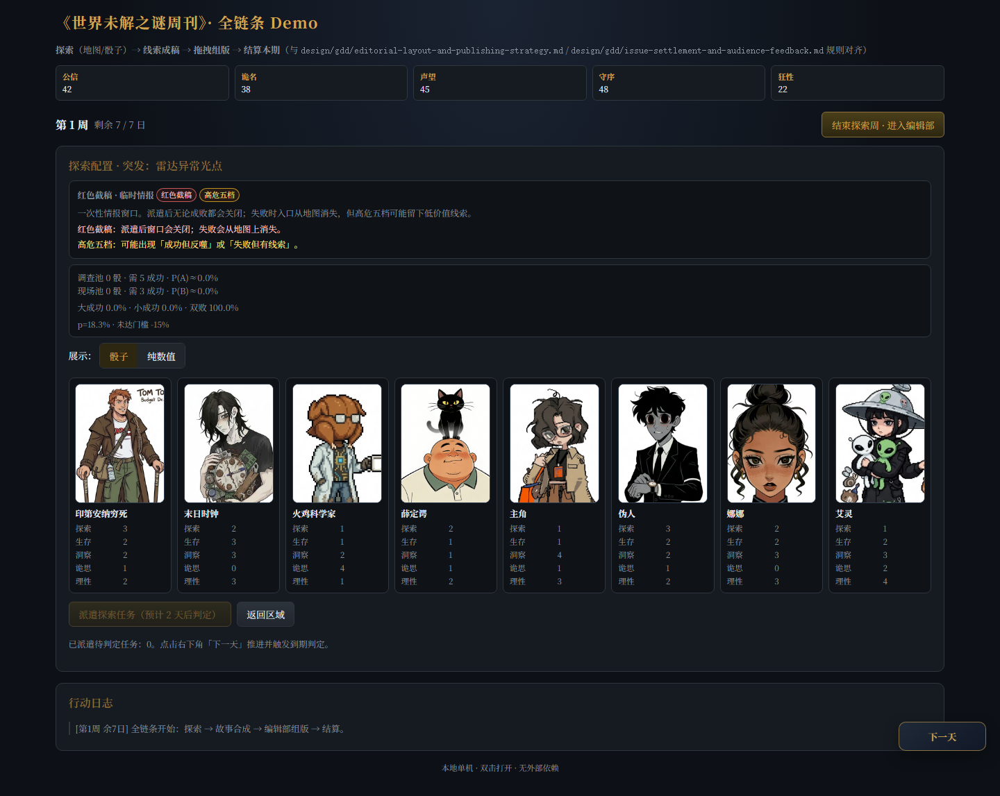
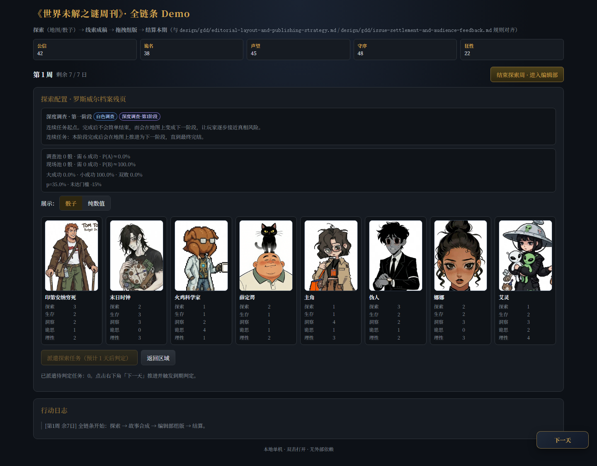
三、连续任务推进：完成后变成下一阶段
深度调查链每完成一段，地图上出现下一阶段，让玩家感到事件在推进，而不是同一任务重复刷。
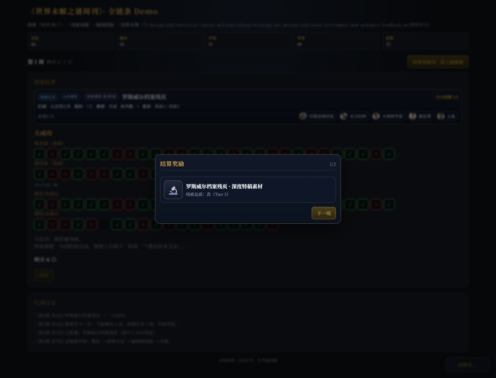
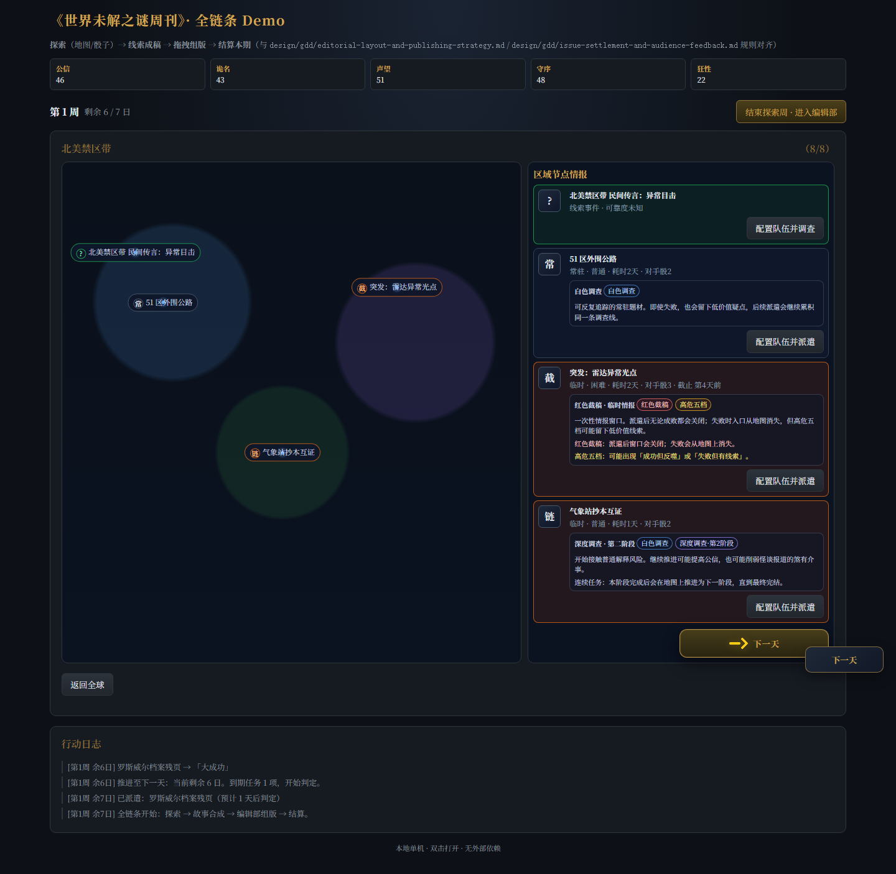
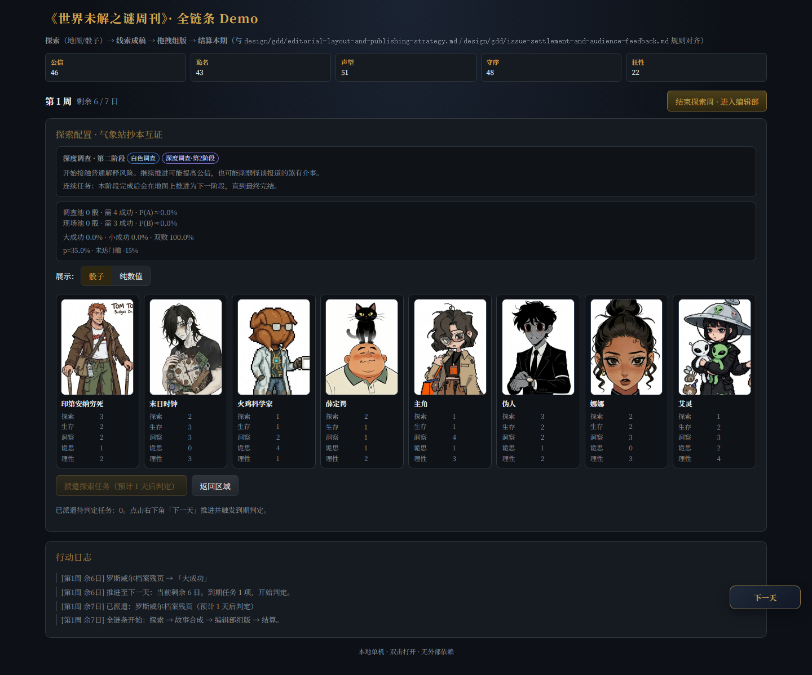
四、高危阶段：五档结果成为高危任务特点
深度链后半段开始使用高危五档，任务卡和配置页都会提前说明成功也可能有反噬，失败也可能有线索。
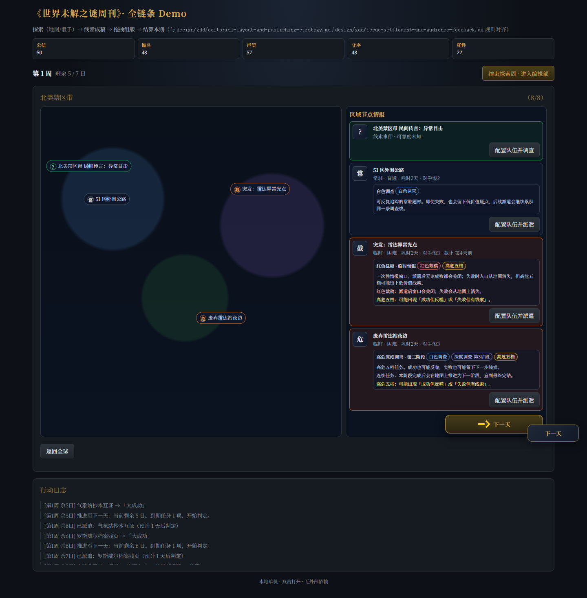
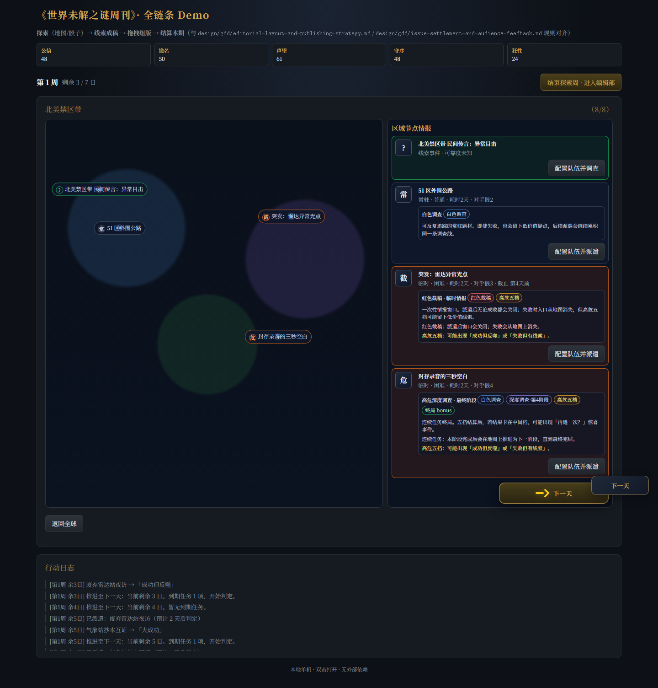
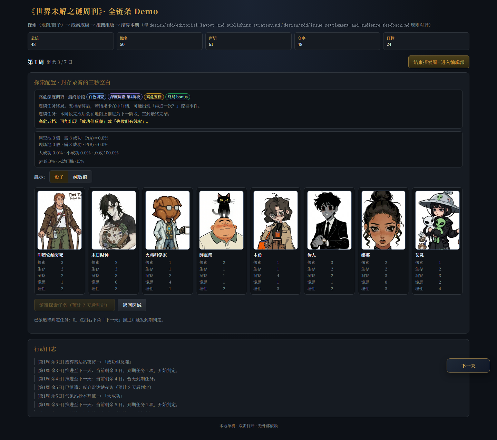
五、再追一次：终局惊喜事件
最终阶段结算卡在中间档时，插入临时事件。玩家可以收手，也可以消耗行动点加入更糟黑骰。
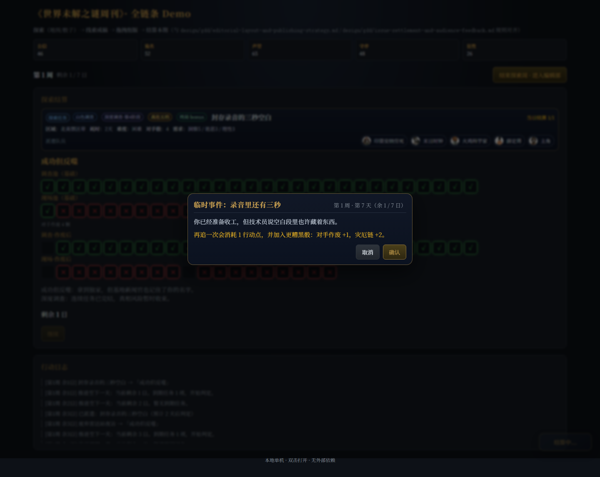
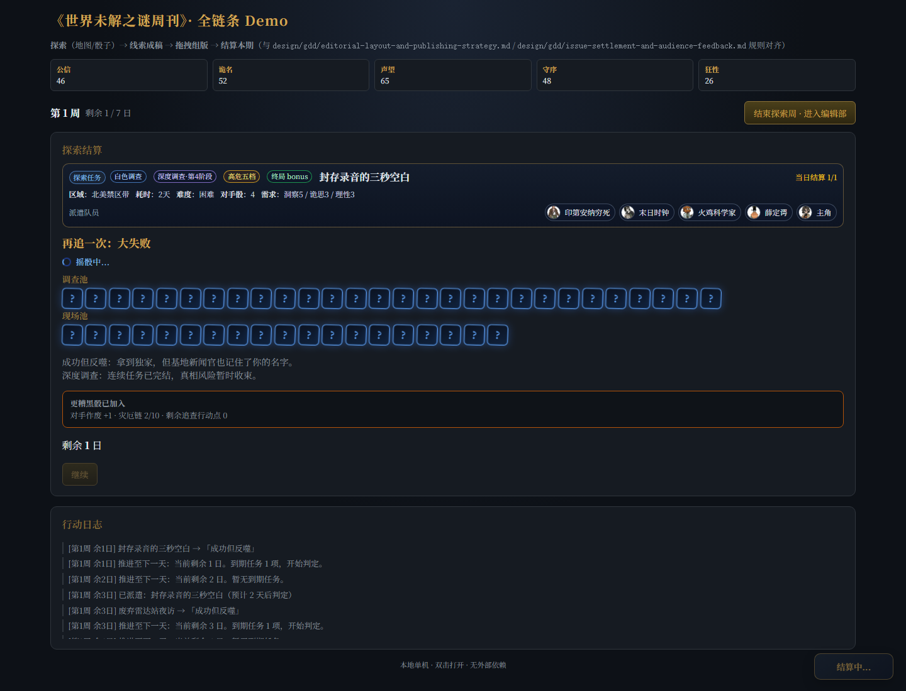